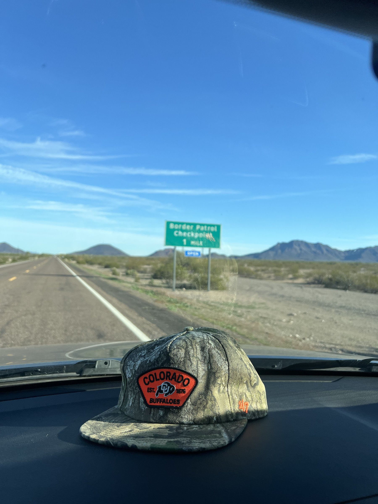

Political Science
Donald Caviness
PhD Student · University of Colorado Boulder
Donald studies comparative politics in the United States and Mexico, using the U.S.–Mexico border as a lens to understand public opinion, political institutions, and governance. His research emphasizes quantitative methods and the analysis of political behavior.

Publications
Working Paper
Party Lines or Border Lines? Partisanship, Contact, and Attitudes Toward US Border Patrol Agents
Working Paper
Democracy in Pieces: Mapping What People Value Most
With Andrew Q. Philips and Komal Preet Kaur
Working Paper
Kicking Democracy Downfield: Support for the Use of Military in the World Cup
With Michelangelo Landgrave, Igor Acacio, and Alba Ramos Escobar
Contact